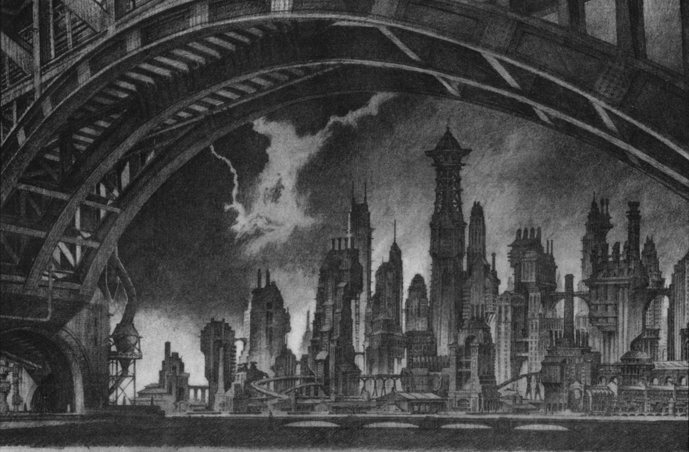

"I′m not going to present you with a fairy-tale image of Gotham. It′s a hard luck town. It always has been. It′s a place of dark tragedies and bitter ironies. A city of deep shadows and sharp contrasts. A city that touches everyone who lives there. For good and bad. I see Gotham as an anvil. One is broken or tempered on it. So many trials. So much misfortune. So little hope. But some thrive there. Gothamites are a tough breed. They′re proud of their town and their talent for living in it. My family has lived there for two centuries. It was there that they built the financial giant that is a leading player in a half dozen industries. And it was Gothamites who helped build it. By their sweat and their labor and sometimes their lives they made Gotham a world competitor. Against all the odds. Maybe Gotham is inspiring in its own way. Inspiration spurred by fear. Or something even darker. But despite their troubles and their setbacks, Gothamites keep going. And there′s something noble about that. It′s an admirable trait, I think. Every city has its own personality. I like to think that dogged determination is Gotham′s. It′s a town that′s never had its hand out. That′s never played the victim. It′s a town that′s used to standing alone. It bears being maligned and forgotten. It helps itself."-Bruce Wayne, President
Wayne Enterprises (formerly WayneCorp) is a company in the DC Universe. Wayne Enterprises is owned by billionaire Bruce Wayne and run by his business manager Lucius Fox. It was founded by merchant ancestors of the Wayne family in the 17th century as a merchant house. It changed and gradually grew when it was officially erected in the 19th century when Alan Wayne, heir to Solomon Wayne, founded Wayne Shipping and Wayne Chemical. Along with Wayne Manufacturing, which came later, the Industrial Revolution fueled Wayne Enterprises into becoming a major powerhouse. In addition to providing an income for Bruce Wayne, the various activities of the organization help facilitate his Batman activities New York city location.
Descending from "Mad" Anthony Wayne and his brother, Darius Wayne (a hero of the American Revolution), carles Arwin Wayne managed the Wayne Family′s then-modest fortune by buying cheap property and holding on to it as Gotham Town grew. As a result, upon his death at age fifty-two, Charles left a considerable real-estate fortune in the form of a merchant house which he left to his sons Solomon Zebediah Wayne and Joshua Thomas Wayne; both of whom became prominent citizens of Gotham Town in the late 1850s. Soloman′s son of his second wife, Alan Wayne, would marry Catherine Van Derm; a member of the once-wealthy Van Derm family, and together they would have a son named Kenneth Wayne. With Alan spearheading the growth and development of the Gotham Railroads and creating Wayne Shipping, & Wayne Chemicals, and later Wayne Manufacturing, which took great advantage of the Industrial Revolution, Wayne Enterprises became a powerhouse. Kenneth′s son, Patrick Morgan Wayne, saw the Wayne legacy through two world wars and built WayneCorp out of the ashes of the Great Depression and later developed WayneTech, whose aircraft plants and shipworks fueled American efforts in the Pacific War. His wife, Laura Elizabeth Wayne, inherited the Wayne fortune at age thirty-seven and became the first Wayne to direct the conglomerate toward ecological responsibility. Patrick and Laura′s son, Thomas Wayne, as a doctor and philanthropist, would create and contribute the Wayne Foundation and its various divisions to the conglomerate. While his son, Bruce Wayne, would expand the conglomerate′s focus to become a global powerhouse in a wide variety of fields, this diversity allowed him to use the conglomerate′s resources for the better-ment of mankind by financing and providing resources for not only his own endeavours, but for the financing of various hero groups such as Young Justice, Teen Titans, Outsiders, Birds of Prey, and the Justice League, as well as combating poverty and disaster-affected areas. Wayne Enterprises is perhaps the only Gotham-based corporation to weather the city′s earthquake and year of No Man′s Land. The company ensured its continued survival by transferring the burden of its manufacturing to satellite facilities elswhere. After fierce debate, the American congress reneged the No Man′s Land and the ambitious "Billion Dollar Build-Up" Federal Works Project began, teaming LexCorp, STAR Labs, Wayne Enterprises, Wayne Foundation and the US Army Corps of Engineers in rebuilding Gotham from the ground up. Profits earned by Wayne Enterprises during NML were some for the first capital funds applied to the city′s eventual rebuilding. Without hesitation, Wayne Enterprises exceeded Lex Luthor′s investments in Gotham′s future.
Although the company is primarily known as a military defense contractor, Wayne Enterprises also includes dozens of umbrella companies involved in all sectors of the economy both in Gotham City and around the world.
Recently, CEO Bruce Wayne made headlines when he announced that he would begin officially funding the vigilante known as the Batman in a “new era in the fight against crime” through the formation of a subsidiary called Batman, Incorporated. Wayne's interest in the Batman likely stems from his own experience with violent crime as a child, but several investors have questioned whether Waynee's noted incompetence in the boardroom will actually provide a benefit to the Batman, rather than a hindrance.
Wayne Aerospace is a subsidiary of Wayne Technologies and remains one of the more highly successful divisions of Wayne Enterprises. It has its own airline called Wayne Airlines and an aviation division called Wayne Aviation. The aerospace division is a major military defense contractor within Gotham and the United States. The W.A. is mostly known for its extremely well structured, luxurious and exclusive corporate and private jets and airliners. Much like the Gulfstream, Wayne Enterprises tries to keep the Slipstream corporate jets out of the hands of celebrities and sells them mostly to large corporations. This in turn has made the Slipstream into a cult item among the rich because it is fashionable to have a plane as a status symbol of wealth. Wayne Aerospace′s experimental aviation branch produces experimental and the research planes built for the United States government and NASA. The military aviation branch designs and manufactures highly successful jet fighters and helicopters for the American Air Forces. The most notable models of these are the W-4 Wraith fighter and the Kestrel attack helicopter. As the most prominent aerospace company in the region, Wayne Aerospace has a working partnership with Eagle Air Force Base near Gotham City. Wayne Aerospace is also responsible for maintaining the systems and the planes for the Archie Goodwin International Airport in Little Stockton, in Gotham. Wayne Aerospace maintains good natured competition with other aerospace corporations like Ferris Air and its nemesis, LexAir. The division has generated millions of dollars for Wayne Enterprises. The company′s government contracts and space exploration contracts with NASA have been very lucrative. However, Wayne Aerospace′s most important mission is to provide the latest technology and information for the Dark Knight to vanquish crime and his enemies.
Wayne Technologies is the biggest division within Wayne Enterprises. As more and more innovations were made and new things were discovered, the division has played an important role in the technology scene around Gotham - providing the latest and cutting edge devices for Batman. As alien invasions and involvement have become more sporadic around Gotham, WayneTech acquired alien technology and used it for research and development. With this breakthrough acquisition, Wayne Enterprise was able to rival technologies produced by its nemesis, LexCorp. Some of Wayne Technologies′ research into alien technology has contributed to large breakthroughs in medicine, cybernetics, pharmaceuticals and avionics. Subsidiaries of WayneTech include: Holt Holdings Inc. (the company formerly owned by the current Mister Terrific), Wayne Biotech, Wayne Pharmaceuticals, and Wayne Healthcare. WayneTech is a great resource for Batman. Not only does it provide contacts for him into the high technology world, the division can also be used to analyze whatever gadget he might find faster than he would be able to do alone. WayneTech also provides a source of business income for Wayne Enterprises as the company owns dozens of patents, including all of Holt′s systems except the T-Spheres, as licensing these patents can be extremely lucrative for the company. With the strength of this division, Batman has access to any kind of medical facility or procedure, from normal to special or experimental applications, information and medical analysis. Through the company he also has access to medical files on everyone in Gotham. Since WayneTech is the market leader in cybernetic applications, he has extremely high level government contracts and contacts.
Wayne Foods is a little known subsidiary of Wayne Enterprises with its headquarters based in downtown Gotham City. The firm was started in 1872 by an Irish immigrant, Patrick Toole, under the name, Toole & Sons Food Merchants. It runs a number of farms and cattle ranches in the Breadbasket regions of the United States, and business was successful in importing Irish products that could be sold at a higher cost in the US economy. By 1905, there were five Toole & Sons stores throughout Gotham City. Patrick Toole died at the age of 72 in 1919, leaving the business to his eldest son, Thomas Toole. Thomas was keen on expanding business across the US; however, the outbreak of war in Europe in 1914 severely impacted trade lines from Ireland to Gotham. At the end of the war in 1918, Toole & Sons Food Merchants was near bankruptcy. Thomas, unable to carry on his father’s legacy, committed suicide in 1922 at age 43. The second youngest Toole brother, Rory, took over the business and immediately set about selling all company assets in favor of entering liquidation.
The business was bought in 1925 by the Wayne family, who were keen on preserving an important part of Gotham’s retail history. It is one of the most financially successful divisions at Wayne Enterprises and oldest branches. The business returned to profit in less than a year, and by the end of the second World War, Toole & Sons stores controlled over 60% of all food retail across the city. This was achieved by diversifying the product range and opening up stock to new markets outside of Ireland and within the US. The company changed its name to Wayne Foods in 1956. Today, Wayne Foods focuses on the high end market and specialty goods. Although it no longer has the dominance across Gotham as it did from the late 1950s to the mid-1980s, Wayne Foods continues to generate significant revenue for Wayne Enterprises. Wayne Foods produces specialized products like ecological foods, natural lines with no additives and controlled growing. Wayne Foods remains a source of information and contacts for Batman, helping to keep tabs on the food product market and threats pertaining to the safety of the food supply around Gotham City.
Wayne Shipping owns dozens of freighters and handles three-and-a-half billion tons of freight each month. It is used by Batman to gain an inside view on smuggling and drug trafficking. In 1986, Wayne Shipping merged with PAAL Ship Corporation, creating the world′s largest commercial shipping operation for precious metals. The former PAAL CEO, Andreas Milanic, successfully floated Wayne Shipping on the New York Stock Exchange in 1988. The Wayne Family currently owns 57% of the company, with Milanic′s second son, Dragoslav, owning 20% (and the remaining 23% is in public ownership). Despite a lack of investment in Wayne Shipping since the merger took place, the company still remains an important player in world ocean transportation.
Wayne Yards is responsible for the building of a large number of naval warships, commercial and private ships, and is currently building a Nimitz class aircraft carrier in Gotham. Wayne Steel and Wayne Yards facilities repair a large number of cruisers and destroyers, and also have contacts within the upper echelons of the Navy and the global maritime business.
Wayne Industries is a research and development company used for industrial purposes. The company studies, researches, and develops cleaner, mechanical fission and fusion power plants; and also owns many factories and normal labor units. The company is heavily involved in the industrial circuit, developing industrial machinery such as, manufacturing heavy engines, motors, pneumatic systems and large scale systems. Additionally, Wayne Industries is also involved in automobile manufacturing (Wayne Automotive) and cloth making. Wayne Mining is also a part of Wayne Industries, along with the few power stations (Wayne Electric) the company owns. Wayne Mining mostly mines and produces gold and some precious stones in Africa.
This division of Wayne Enterprises remains a facility for the research and development of more innovative medical procedures and systems. The company educates, trains and teaches a huge amount of people annually. It maintains a good working relationship with the Gotham University and Drake Medical. Wayne Chemicals and Wayne Pharmaceuticals work closely with Wayne Biotech to develop new medical vaccines and medicines for the treatment of different diseases. Much of the present research at Wayne Biotech is focused on finding the cure for cancer. Since the human genome has already been unlocked, Wayne Biotech is studying cloning to produce feasible human organs for future transplants. The division is also involved in research into neurosurgery methods, the fight against AIDS and HIV, and reconstructive plastic surgery. Batman uses Wayne Biotech as a research tool for finding medical information, patient histories, information on illnesses, and thus clues for his crime prevention activities.
Wayne Medical is Wayne Biotech′s sister company, but each has different fields of study and work. Wayne Medical handles most of the healthcare system in Gotham and also studies cancer and AIDS in tandem with Wayne Biotech, however Wayne Medical is focused more on researching illnesses than treating them. It maintains and runs many hospitals in Gotham City and helps the Wayne Foundation with the orphanages.
Wayne Electronics is a large consortium that has recently become a major player in the home and personal computing market. Its products rival LexCorp′s in terms of speed, durability and ease of use. Wayne Electronics is a large consortium that manufactures almost anything from portable radios to stereo and Hi-Fi systems, movie cameras, cameras and electronics, measuring devices, scanners, surveillance equipment, computers and other electronics devices. Wayne Electronics is one of the top selling brand names in electronics, from multimedia to precision systems. Its other branches of business include information technology, wired networks, wireless networks and space exploration systems and satellites.
Batman utilizes contacts through Wayne Electronics in the media and entertainment industry, even if in lesser degree than through Wayne Entertainment. Wayne Electronics′ contracts with the aerospace, nautical and military industries provide contacts as well.
Wayne Entertainment owns many arenas and stadiums in Gotham and has leased out the Sommerset Stadium to the Metropolis Monarchs and operates its own record label, Wayne Records. This division of Wayne Enterprises continuously innovates new areas in entertainment to create a niche for itself in the entertainment industry around Gotham. Furthermore, Wayne Entertainment has working partnerships with several modeling agencies and multimedia houses, and provides a large number of contacts and information. The Daily Planet newspaper, is operated by Wayne Entertainment. Wayne Entertainment is in direct competition with WGBS (run by Galaxy Communications) and LexCom (run by LexCorp). Those companies, along with other television and movie companies, provide the same services as Wayne Entertainment. Through Wayne Entertainment, Batman has contacts in the media and entertainment industries.
Wayne Construction is the property, construction and civil engineering division of Wayne Enterprises. The division has played a prominent with the construction of a free railway system around Gotham City, wiping out government corruption in the process. In addition, Bruce Wayne himself amassed a private fortune of his own (aside from inheritance) as a successful real estate investor before Gotham became a booming metropolis.
Wayne Chemicals is a part of technology unit at Wayne Enterprises. It controls the branches such as Wayne Oil, Wayne Pharmaceuticals and Wayne Botanical. Wayne Oil acquired Luxor Oil, another oil company that has oil wells, drilling and refineries, providing fuel for Gotham as well as source of investment income for Batman. Wayne Chemicals also has a small percentage of ownership in Tyler Chemicals, based in New York City. Wayne Oil gives Batman a major connection to OPEC and other oil organizations and companies around the world. Wayne Chemicals exercises strong scientific and technological proficiency at developing new compounds and chemicals, but has shifted to research and development in the 1980s. With the oil fields, wells and refineries Wayne Oil purchased with Luxor Oil, it has also started to do research in petrochemicals even more than before. At the same time, it has concentrated a huge effort towards alternative fuel sources. Wayne Chemicals is the first company to have created a power generator using algae. Wayne Pharmaceuticals is another large R&D unit at Wayne Chemicals, providing income, scientific breakthroughs, direct links in the scientific community as well as giving him a technological edge over his adversaries.
Wayne Steel is the steel manufacturing division at Wayne Enterprises. The Steel plants are among the oldest steel mills and one of the oldest shipyards in Gotham City and have nearly as much fame as the Newport News Shipyards. The Wayne Steel shipyards date back to the founding of the Tricorner naval yards. As the government′s own naval shipyards started to pull out from Gotham, Wayne Steel moved in and acquired them for WayneYards. The division of the company has always maintained a great working relationship with Gotham-based shipyards. Due to the high quality of their steel, Wayne Steel has also supplied shipyards outside of Gotham with their steel needs. Recent globe-spanning events have left the US navy depleted of ships and the U.S. government since been its most prominent customer for the division, as Wayne Steel has run into a boom and at times can′t supply enough steel to the industry. Because of this, Wayne Steel has started to open more steel mills close to Gotham and also around the United States. This has a lead to a major windfall profits for the company. Metallurgical studies have become extremely crucial as alien technologies and new alloys have been studied and then replicated. A new side of the business that has only recently started to take off has positioned Wayne Steel it has had with the government from the 19th century, the division of the company has become a market leader in the study of alien alloys from recent economic and manufacturing crises. This division of Wayne Enterprises allows Batman to prioritize technology and alloys for him to study. Wayne Steel′s alliance with the US Navy and the government has produced numerous contacts for Wayne Steel.
The Wayne Foundation is the holding company for the Thomas Wayne Foundation and the Martha Wayne Foundation. The Wayne Foundation funds scientific research and helps people with research by providing facilities and training.
Through the Wayne Foundation and the organizations underneath, Bruce Wayne not only addresses social problems encouraging crime and assists victims in a way that his Batman persona cannot, but the arrangement also provides a large network of connections in the world of charities. He finds out about the newest trends and newest arts, and at the same time maintains connections to the streets through the soup kitchens and social services groups, which augments his crime fighting efforts.
The Thomas Wayne Foundation is a foundation for medicine and medical help. This foundation gives annual awards for medical breakthroughs and lifelong commitment, similar to the Nobel Foundation. The Thomas Wayne Foundation is also responsible for funding the Thomas Wayne Memorial Clinic in Park Row, Gotham′s infamous Crime Alley. The foundation funds and runs dozens of clinics in Gotham. Bruce Wayne′s surrogate mother, Dr. Leslie Thompkins, ran the Memorial Clinic in Crime Alley and governed the other clinics until she left Gotham.
The Martha Wayne Foundation is a patron and supporter of arts, families, education, and tolerance. The foundation supports and helps to run a number of orphanages and free schools, and provides teachers for those who have learning difficulties. Artists can apply for grants from the foundation to help support them in furthering the arts. The foundation sponsors companies like Family Finders. Family Finders is an organization directed at finding lost people and uniting families. The Martha Wayne Foundation also sponsors and runs dozens of soup kitchens within the city.